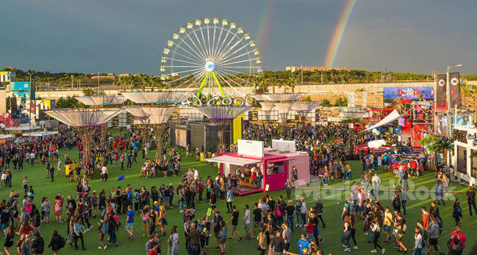

Mad Cool vuelve a Madrid
Mad Cool Festival 2019 calienta motores. Con un cartel con nombres como The Cure, Bon Iver, The National o Vetusta Morla, Mad Cool se reivindica una edición más como un referente musical mundial de primer orden. En ese empeño y con el compromiso de que el público disfrute de una experiencia musical y vital inigualable, la organización del Festival llevará a cabo en 2019 importantes innovaciones técnicas y mejoras sustanciales en las infraestructuras del recinto con el objetivo de facilitar y hacer más cómodo, ágil y sencillo acudir a la gran cita con la música de Madrid. Con la música, pero también con el arte y con la moda. Mad Cool Festival 2019 es más que música y comienza hoy. La fiesta culminará el 11, 12 y 13 de julio.

Novedades y Mejoras:
- Más espacio: el número de escenarios se reducirá a seis frente a los siete con los que el Festival contaba en 2018 y desaparecerá la zona VIP del front stage.
- Se disminuirá el aforo en 5.000 personas diarias.
- Nuevo sistema tecnológico para el acceso de público. Mad Cool Festival trabaja con una empresa de reconocido prestigio para asegurar el funcionamiento adecuado de la red técnica. Además, para todas las entradas adquiridas online, el 100% de las pulseras acreditativas se enviarán a domicilio a cualquier destino del mundo (1).
- Para todo aquel que disponga de entrada –ya sea de un único día o el abono de tres–, el transporte de regreso desde el recinto en Valdebebas al centro de Madrid será gratuito en horario de 1.30 h a 5.30 h., con el fin de minimizar esperas innecesarias.
- De acuerdo con la nueva Ordenanza del Ayuntamiento de Madrid referida a Grandes Eventos, Mad Cool Festival está trabajando en un Plan de Movilidad específico para el certamen con el Consorcio de Transportes y la Dirección General de Movilidad del Ayuntamiento de Madrid y asesorado por un Departamento de Ingeniería especializado de reconocido prestigio.
- Mejora del firme de acceso, hall y zonas de tránsito del recinto para hacer más cómodo el paso peatonal.
- Punto Violeta. Mad Cool 2019 hace hincapié en su compromiso social reforzando y ampliando esta instalación aunque, afortunadamente, durante 2018 no se registró ninguna incidencia.
- Ampliación del número de unidades de WC.
- Los metros lineales de barras de bebidas y el número de camareros tendrán un incremento significativo para agilizar el proceso de venta.
Responsabilidad Social Corporativa. Mad Cool mantiene su firme compromiso social.
Desde que comenzó su andadura en 2016, el Festival abrió bolsas de trabajo en diferentes distritos de Madrid apoyando económicamente diversas iniciativas sociales. Una iniciativa que se suma al 15% del importe de la entrada y/o invitación dedicado a RSC.
En 2018 se ha hecho un donativo al proyecto Semillero Cool, de la Fundación para la Acción Social por la Música de 17.812,65 €.